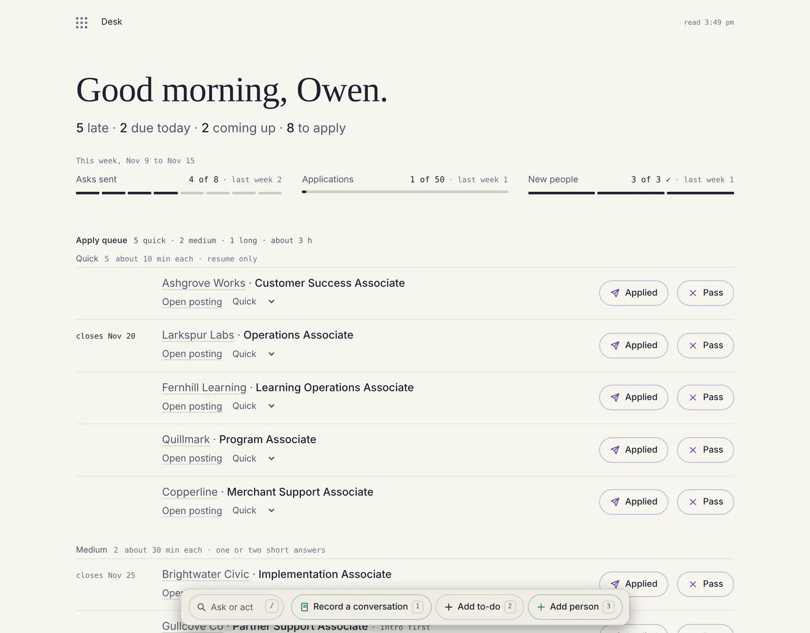
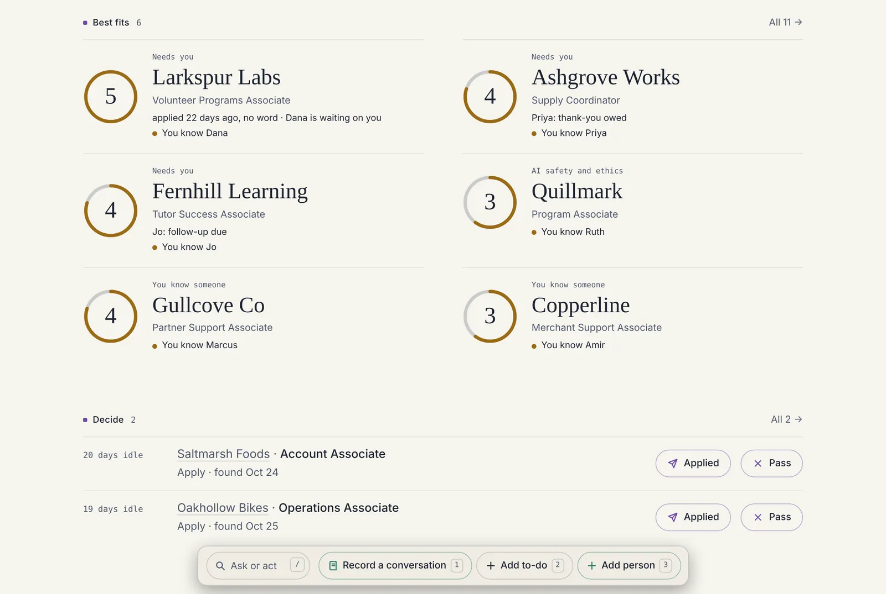
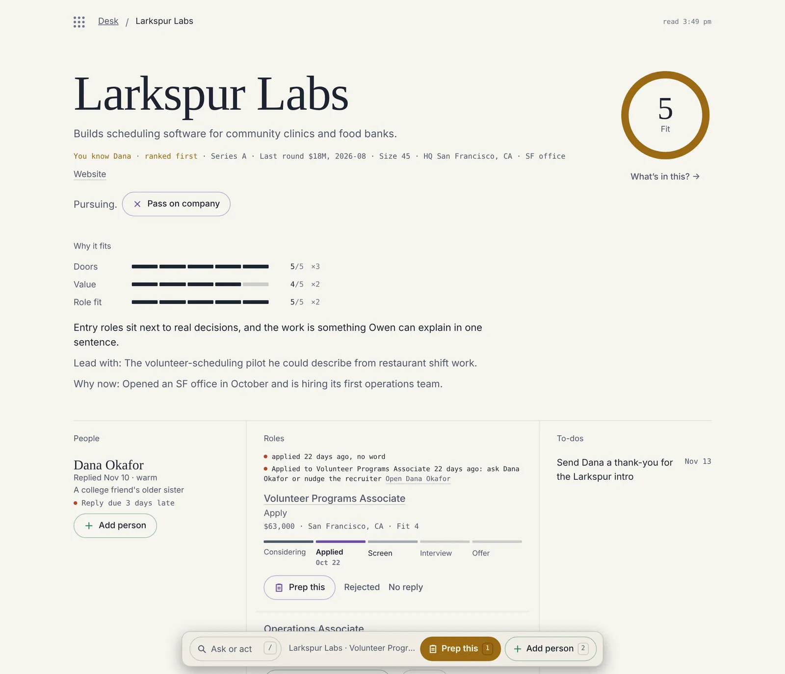
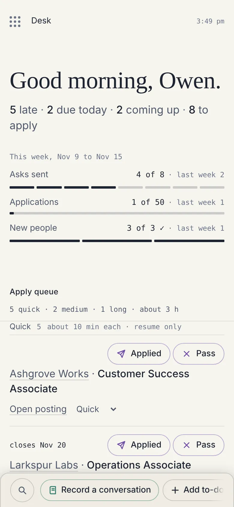

Owen Stefanakos
I have a Philosophy B.A. from Colorado College (May 2026) and I'm moving to San Francisco in November 2026.
I want to work somewhere that uses AI in a really positive way, where I'm adding value and making a positive change.
Project: my job search system
The problem
A job search is really three searches at once: a company doing something I care about, a role there I actually fit, and someone I know who works there. Each one alone is easy. The overlap is what gets you an interview, and it's the part I kept losing track of. I wanted it surfaced every morning without me hunting for it.
What I built
I'm not a software engineer. I designed this system and directed Claude Code to build it; I didn't hand-write the code. My job was deciding what it should do, setting the rules, and checking that it worked.
It has four parts:
- Fetchers and an inbox sweep. Scheduled jobs on GitHub Actions pull postings from company job boards and file my email. No AI involved, so they're cheap and predictable.
- Triage. A cheap model reads each new posting against a plain-English file of what I want and a written scoring rubric. Obvious mismatches, like roles asking for 3+ years, get dropped by plain rules before any model sees them.
- One activity record. Everything I do (a message, a call, an application) is one new line in an append-only log. Statuses and reminders are worked out from it, so nothing gets lost by overwriting.
- The Desk. One web page that is my whole interface: best-fit roles and who could refer me, what needs me today, and a page per company.
In all: 48 scripts, 9 scheduled workflows, 8 AI helper roles and 10 saved routines.




How it runs
Overnight, workflows fetch new postings and copy my tracker into the repo. Each morning one Claude session runs the routine: it checks the fetch worked, hands the bulk reading to cheaper helper models, and scores what's left. Through the day the inbox sweep runs hourly and pings my phone only for replies and interview mail. Then I open the Desk.
The split matters. Fetching, filtering, validating, mirroring and the week's numbers are plain scripts. Models only do judgment work: scoring fit, summarizing, drafting. If a script can produce a number, a script produces it.
One hard rule: it never sends, submits or posts anything for me. Emails are drafts, applications are prepared, and I press the buttons. The only exceptions go to me alone: my daily news digest, phone alerts, and calendar blocks it made itself.
What broke, and what I changed
- GitHub's schedule dropped runs. Since November 4 it delivered only 3 or 4 of the 34 hourly inbox runs a day, and on November 10 the fetch started four hours after the morning routine. I wrote up an outside timer that calls GitHub to start the same workflows on time, and kept the built-in schedules as a backup.
- It cost too much. Early on the morning routine used about 60% of my weekly AI usage: a 34 to 50 minute session on the most expensive model, with models doing plumbing like copying sheet data. I moved the plumbing into scripts and switched to the cheapest models that do each job well. Recent runs take 10 to 22 minutes with 4 to 6 helper runs.
- Failures were silent. An October audit found the fetch hadn't run (a test failed) and only the morning routine noticed, two hours later. Some steps had also been skipped for days. Now every workflow records a heartbeat as proof it ran, and a health board rates the system red, amber or green and pushes to my phone only on red.
Procure Maine
I co-founded Procure Maine, a concierge and delivery company, in high school. We started it when Maine required out-of-state visitors to quarantine for Covid, ran it from May 2020 to August 2021, and pivoted to serving a retirement community in Maine once the mandate was lifted.
We pitched 27 clients, mostly businesses, and closed 18. We built supply relationships with local bakeries, surf shops and grocery stores. It was covered by the Sunday Boston Globe (read the piece), Channel 8 News and 99.9 The Wolf radio.
The mountain-bike race team
I founded a high school mountain-bike race team, the Southern Maine MTB Syndicate, and raced on it. It grew to 40+ racers within two years, and the team won the New England Championships.
Contact
LinkedIn: linkedin.com/in/owenstefanakos
Email: maineowen@gmail.com